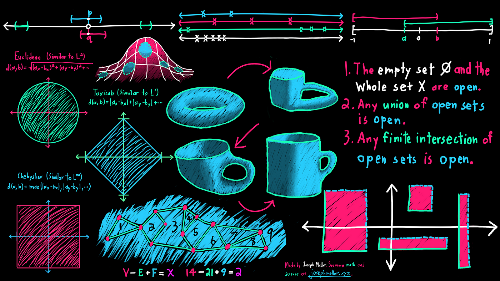
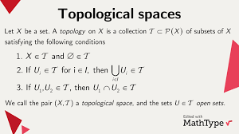
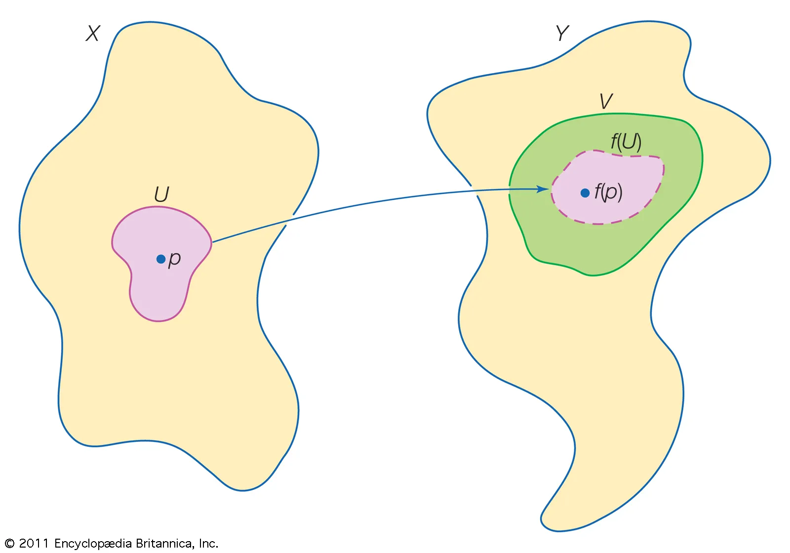
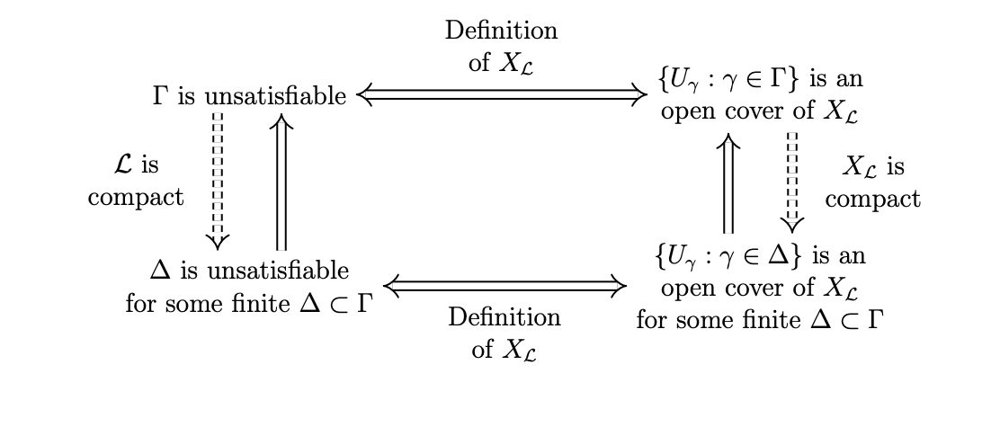
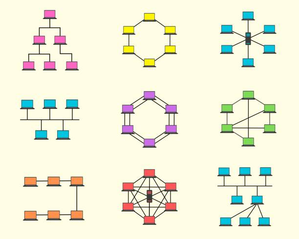

What is Topology?
Topology is a branch of mathematics that focuses on the properties of space that are preserved under continuous transformations. It deals with the concepts of continuity, connectedness, and compactness, which are fundamental to understanding the structure of spaces in both pure and applied mathematics.
Unlike geometry, which concerns itself with specific measurements and shapes, topology is more concerned with the qualitative aspects of objects. It examines what properties remain unchanged when an object is stretched, twisted, or deformed, without breaking or gluing parts together.
Key Concepts in Topology
Topological Spaces
A topological space is a set of points, along with a collection of open sets, that satisfy certain conditions. These open sets define the structure of the space, determining what it means for a set to be "close" to another or for a set to be "continuous" within the space.
Example: The set of real numbers, R, with its usual topology is a topological space. The set of intervals (such as (0, 1)) are considered open sets in this space.
Topological spaces are the building blocks of topology, and understanding their properties is essential to further study in the field.
Continuity and Homeomorphisms
Continuity in topology refers to the idea that small changes in one part of an object do not result in large, abrupt changes in other parts. In a topological space, a function between two spaces is continuous if the pre-image of every open set is open.
A homeomorphism is a special kind of continuous function that has a continuous inverse. Two topological spaces are considered homeomorphic if there is a homeomorphism between them. This means they are essentially the same from a topological point of view, even if they appear different geometrically.
Example: A circle and an ellipse are homeomorphic, since they can be transformed into each other without cutting or gluing.
Compactness
Compactness is a crucial concept in topology that generalizes the idea of a closed and bounded set in Euclidean space. A topological space is compact if every open cover of the space has a finite subcover. In simpler terms, compactness ensures that the space behaves in a "well-behaved" way, preventing "infinite stretching" or "unboundedness."
Example: A closed interval in the real number line, such as [0, 1], is compact. This is an important property used in various areas of analysis and applied mathematics.
Connectedness
A space is connected if it cannot be divided into two disjoint non-empty open sets. In other words, it is impossible to "break" the space into two separate pieces. Connectedness is a fundamental property in topology, and many topological problems revolve around understanding how and when spaces are connected or disconnected.
Example: The real line, R, is connected, while the set of two disjoint intervals such as (0, 1) and (2, 3) is disconnected.
Applications of Topology
Topology has a wide range of applications in many fields of science and engineering. Below are some areas where topological methods are applied:
- Physics: Topology is used in the study of the structure of space-time, quantum field theory, and the study of phase transitions. Concepts such as homotopy and topological invariants play a key role in modern physics.
- Computer Science: In computer science, topological methods are used in data analysis, machine learning, and network theory. For example, persistent homology is a topological method used to analyze the shape of data in high-dimensional spaces.
- Robotics: Topology is applied in robotics for path planning and motion analysis. By understanding the topology of a workspace, robots can navigate obstacles and plan efficient movement paths.
- Biology: Topology is also used in the study of DNA, protein folding, and other biological phenomena. Topological methods can help understand the folding patterns and interactions of biomolecules.
Famous Conjectures and Problems in Topology
Topology has produced many famous conjectures and unsolved problems. Here are a few notable examples:
- Poincaré Conjecture: This conjecture, proposed by Henri Poincaré in 1904, suggests that every simply connected, closed, 3-dimensional manifold is homeomorphic to a 3-dimensional sphere. It was proven by Grigori Perelman in 2003, earning him the Fields Medal.
- Four Color Theorem: This famous theorem in graph theory states that no more than four colors are needed to color a map such that no two adjacent regions share the same color. This was proved in 1976 using a computer-assisted proof, marking a milestone in the use of computers in mathematics.
- Brouwer Fixed-Point Theorem: This theorem states that any continuous function from a closed ball to itself has at least one fixed point. It has important applications in various areas, including economics, game theory, and the theory of differential equations.
The Future of Topology
The study of topology continues to evolve, with new applications and challenges arising in diverse fields. Some areas where topology is expected to make significant contributions include:
- Quantum Computing: Topological quantum computing, which uses topological states of matter to store and manipulate quantum information, could revolutionize the field of computation in the near future.
- Data Science: Topological data analysis (TDA) is gaining popularity in the study of complex data sets. By applying tools from algebraic topology, researchers are able to uncover patterns and structures in large, high-dimensional datasets.
- Artificial Intelligence: AI algorithms are increasingly using topological concepts to better understand complex patterns in data, with potential applications in machine learning, image recognition, and natural language processing.